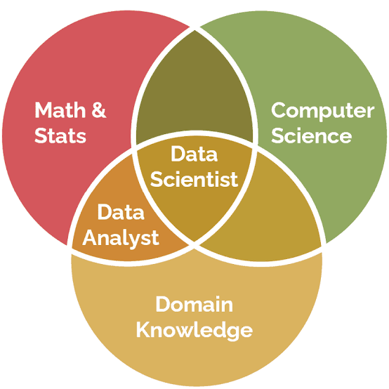
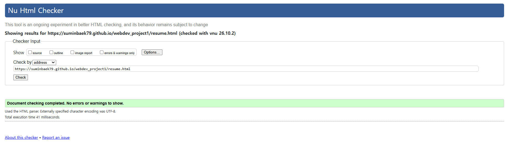

Sumin Baek - Resume
Contact Information
- Email: sbaek9@hawk.illinoistech.edu
- Location: Chicago, IL / Incheon, South Korea
- Major: Data Science
Education
Incheon National University
Undergraduate Student, Department of Data Science
Illinois Institute of Technology
Visiting Exchange Student, College of Compution (Data Science)
Academic & Data Projects
Business Data Analytics & Predictive Modeling
Project Theme: Tourism Data Analytics(Korea)
- Analyzed complex datasets to extract meaningful business insights.
- Built and evaluated machine learning models to improve prediction accuracy.
Relevant Coursework
Data science relies on the intersection of mathematics, computer science, and domain knowledge.
To build a balanced foundation across these essential areas, I have completed key coursework in each discipline:

- Probability and Statistics
- Business Programming
- Artificial Intelligence and Machine Learning
Technical Skills
- Languages: Python, SQL, R
- Tools & Platforms: Kaggle, Notion, Git
Page Validation
